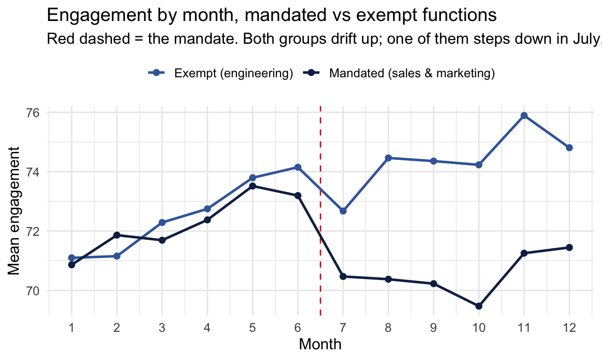
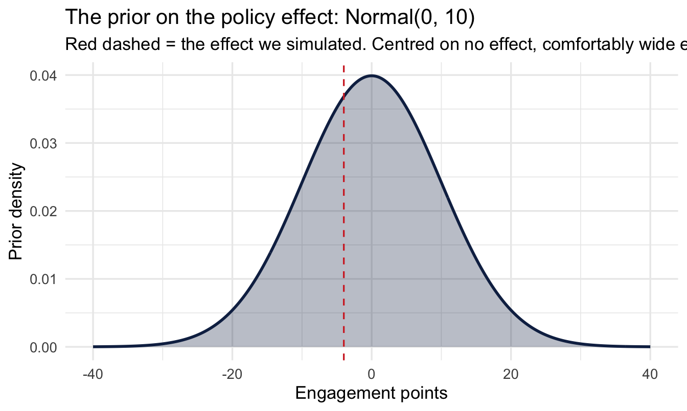
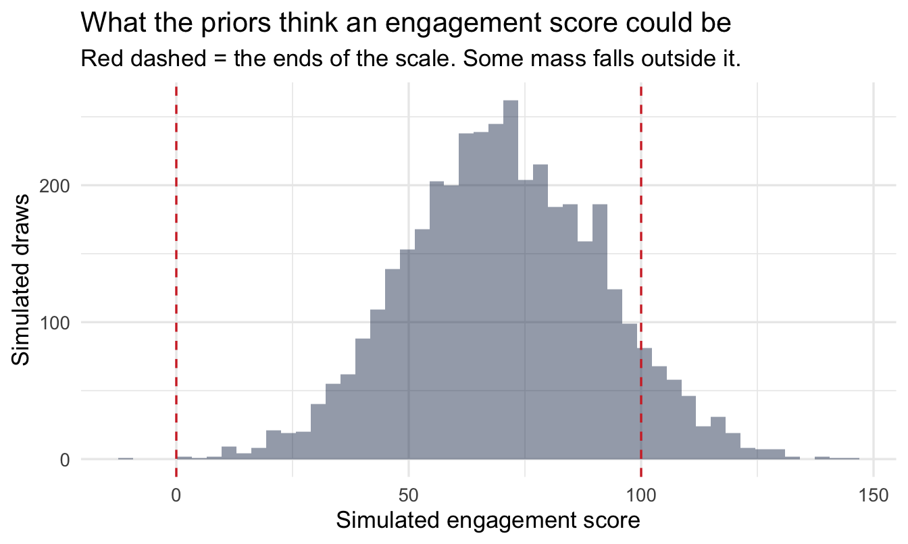
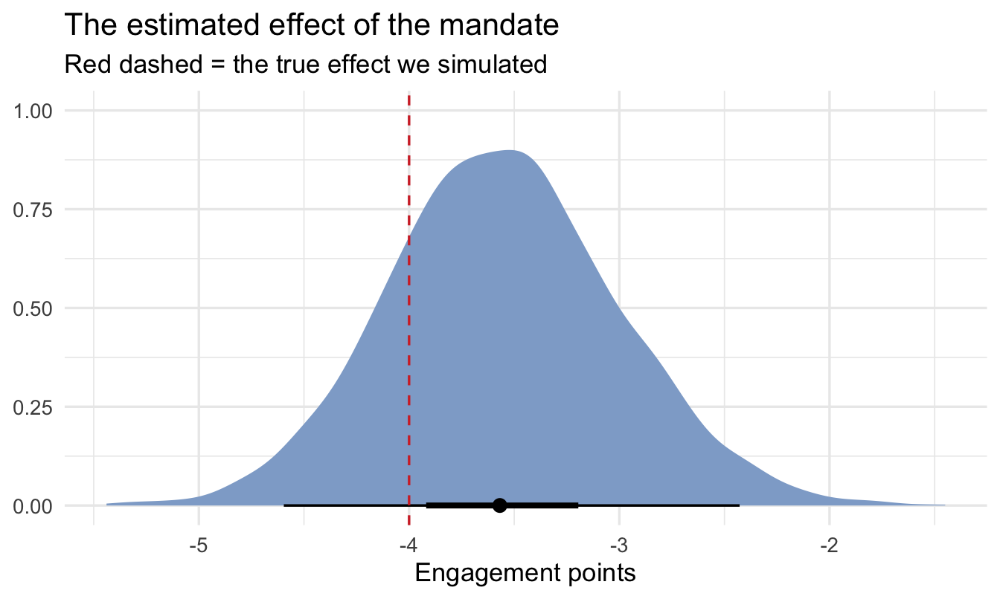
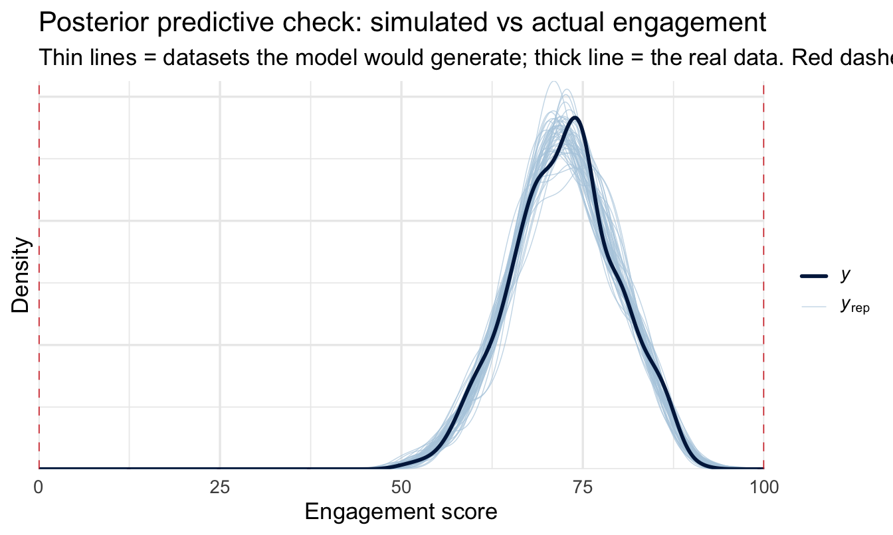
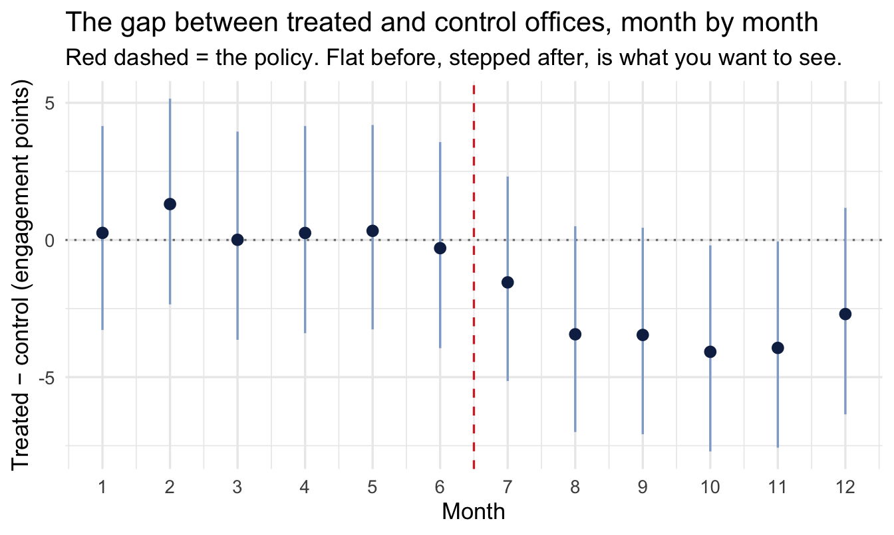
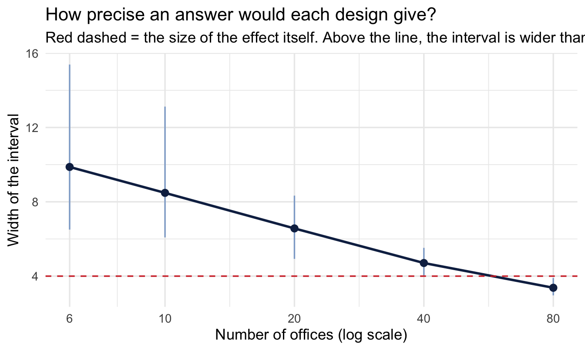

library(tidyverse)
library(brms)
library(tidybayes)
theme_set(theme_minimal(base_size = 13))
set.seed(21)
# Shared colour tokens (matching theme/academicdesign*.scss). The navy ramp
# carries the data; red is reserved for reference lines and annotations,
# never for a second data series.
navy <- "#122a52"
navy_mid <- "#3d68a8"
navy_light <- "#8fabd0"
red <- "#d32f2f"22 Causal Designs: Finding Variation You Didn’t Create
Welcome back
Chapter 21 ended on an assumption we couldn’t check. The adjustment set identifies a causal effect given the graph, and the graph asserts there is no unmeasured common cause. In People Analytics there almost always is one — motivation, manager support, whatever made someone volunteer for the programme — and it’s unmeasured precisely because it’s hard to measure.
Adjusting your way out of that is not available. You cannot control for a variable you don’t have.
What is available, more often than people expect, is variation the organisation created for its own reasons. A policy that started on a particular date. A rollout that reached the Northern region in March and the Southern in September. A bonus threshold that applies at exactly 24 months’ service. None of these were designed as experiments, and all of them produce comparisons where the thing you care about moved for a reason that has nothing to do with the people it moved for.
This idea has a name and a long history. In Mostly Harmless Econometrics, Angrist and Pischke put natural experiments near the front of the book, and anyone who reads economics papers will recognise the pattern: a striking number of them open not with a hypothesis but with a discovery — the authors explaining what changed, for whom, and when, before any model appears. Finding the natural experiment is the contribution. The estimation afterwards is comparatively routine.
Two habits sit behind that, and both are rarer outside economics than they should be:
- An insistence on identifying causality. “Correlation doesn’t imply causation” is treated as the beginning of the problem rather than the end of the discussion. The interesting question is what would have to be true for a causal reading to be earned, and whether anything in the data can get you there.
- A willingness to work with found data — data that nobody designed an experiment to produce, generated by an organisation going about its business.
People Analytics has the second in abundance and has borrowed very little of the first. Almost everything we work with is found data, and the field has largely inherited the caveat without the toolkit that was built to get past it. Which is an odd place to end up, because the caveat is the discouraging half.
That’s the trick of this chapter. Stop trying to statistically remove confounding, and start looking for places the organisation removed it for you by accident.
Important
The core idea in one sentence: if you can find a moment when the treatment changed but the people didn’t, the comparison does the work that adjustment couldn’t.
What you’ll be able to do by the end
- Recognise the three kinds of accidental variation worth looking for — a date, an order, a threshold
- Estimate a difference-in-differences model in
brmsand say exactly what it assumes - Build an event study to interrogate the parallel-trends assumption instead of asserting it
- Know why staggered rollouts break the obvious model, and what to search for
- Recognise when an instrument or a threshold gives you a design, and when it doesn’t
- Run a simulation-based design analysis before collecting data — and say, in advance, whether the study you’re being asked to run can answer the question at all
22.1 Setup
No peopleanalyticsdata this time. Every dataset in that package is a cross-section — one row per person, no time dimension and no policy change — and the designs in this chapter need both. So we simulate.
That’s not a compromise. It’s the same discipline as Chapter 21’s three structures: when we generate the data, we know the true effect, and we can check whether a method recovers it. You will never have that luxury with real data, which is exactly why it’s worth spending time with simulated data while you’re learning what these methods do.
22.2 Three kinds of accidental variation
Before any modelling, the thing to develop is an eye for the opportunity. Three patterns account for most of what you’ll find in an organisation:
A date. Something changed for some people at a known moment. A return-to-office mandate, a new parental leave policy, a change to the bonus formula, a reorganisation that moved one function under new leadership. The comparison is before-versus-after, for the affected group against an unaffected one. This is difference-in-differences, and it’s most of the chapter.
An order. The same change reached different groups at different times — a manager training programme rolled out region by region over eighteen months, a new HRIS deployed in waves. Early groups act as a comparison for later ones. This is a staggered rollout, and it is more delicate than it looks.
TipThe cheapest win available to you
Rollouts are usually sequenced by operational convenience — whichever region is ready first, whichever director shouted loudest. Almost nobody asks what sequence would make the result measurable.
If you have the standing to be in that conversation, this is the highest return-per-minute intervention in the whole book. You are not asking for a budget, a headcount or a delay. You are asking that the order be decided a little more deliberately, and ideally that one group goes last rather than never — which costs nothing, because they were always going to be last anyway.
Do it once and the organisation gets an answer it would otherwise never have had. It is also a rare chance to make the function meaningfully more evidence-driven through a single decision, taken before anything happens, rather than through an analysis produced after the fact that nobody is in a position to act on.
A threshold. A rule applies at a sharp cutoff. Share options vest at exactly two years. Employees below a rating of 3 go onto a performance plan. A bonus multiplier kicks in at 110% of target. People just either side of the line are near-identical, and one group got the treatment. This is a regression discontinuity.
Tip
The practical version of this chapter is a habit rather than a technique: when someone asks a causal question, ask what changed and when. Most of the time the answer is “nothing” and you’re back to Chapter 21. But it is asked far too rarely, and organisations change things constantly.
22.3 Difference-in-differences
22.3.1 The situation
A company mandates three days a week in the office. It applies to the sales and marketing functions from July; engineering is exempt and carries on as before. Leadership wants to know what the mandate did to engagement.
The obvious analysis — compare engagement in sales before and after — is confounded by everything else that happened in July. The other obvious analysis — compare sales to engineering after July — is confounded by every way those two functions differ. Difference-in-differences uses both comparisons to cancel each other out.
n_offices <- 40
months <- 1:12
policy_month <- 7
1true_effect <- -4
offices <- tibble(
office = 1:n_offices,
2 treated = as.integer(office <= n_offices / 2),
3 office_base = rnorm(n_offices, mean = 70, sd = 6)
)
panel <- expand_grid(offices, month = months) |>
mutate(
post = as.integer(month >= policy_month),
4 trend = 0.4 * month,
engagement = office_base + trend +
5 true_effect * treated * post +
rnorm(n(), sd = 3)
)- 1
- The mandate costs four engagement points. We know this because we’re writing it; the whole exercise is checking whether the method finds it.
- 2
- Half the offices are in the affected functions.
- 3
- Offices differ from each other, permanently and substantially — a six-point spread against a four-point effect. This is the confounding that a simple after-only comparison would fall into.
- 4
- Engagement is drifting upward over the year for everyone, treated or not. This is the confounding that a simple before-and-after comparison would fall into.
- 5
- The effect only exists for treated offices, only after the policy.
22.3.2 The 2×2, before any model
Difference-in-differences is worth meeting as four numbers before it’s a regression, because the regression obscures how simple it is:
cell_means <- panel |>
group_by(treated, post) |>
summarise(engagement = mean(engagement), .groups = "drop")
cell_means |>
pivot_wider(names_from = post, values_from = engagement,
names_prefix = "period_") |>
mutate(change = period_1 - period_0)# A tibble: 2 × 4
treated period_0 period_1 change
<int> <dbl> <dbl> <dbl>
1 0 72.5 74.4 1.87
2 1 72.3 70.5 -1.71Each group’s change over time is the first difference. The difference between those changes is the estimate — hence the name:
changes <- cell_means |>
pivot_wider(names_from = post, values_from = engagement,
names_prefix = "period_") |>
mutate(change = period_1 - period_0)
1diff(changes$change)- 1
-
Treated group’s change minus control group’s change. Compare it to the
true_effectof −4 we built in.
[1] -3.576391The control group’s change absorbs everything that happened to everyone — the upward drift, the season, whatever else July brought. What’s left is what happened to the treated group and nobody else.
22.3.3 Look at it first
The 2×2 collapses twelve months into two numbers, which is the right summary and the wrong first look. Before modelling, plot it — the same habit as every other chapter, and doubly worth it here because the shape over time is what the design’s credibility rests on:
group_means <- panel |>
group_by(treated, month) |>
summarise(engagement = mean(engagement), .groups = "drop") |>
mutate(group = if_else(treated == 1,
"Mandated (sales & marketing)",
"Exempt (engineering)"))
ggplot(group_means, aes(month, engagement, colour = group)) +
geom_vline(xintercept = policy_month - 0.5,
linetype = "dashed", colour = red) +
geom_line(linewidth = 1) +
geom_point(size = 2) +
scale_x_continuous(breaks = months) +
scale_colour_manual(values = c("Mandated (sales & marketing)" = navy,
"Exempt (engineering)" = navy_mid)) +
labs(
title = "Engagement by month, mandated vs exempt functions",
subtitle = "Red dashed = the mandate. Both groups drift up; one of them steps down in July.",
x = "Month", y = "Mean engagement", colour = NULL
) +
theme(legend.position = "top")
Two features matter, and they map onto the two confounders we built in. Both lines drift upward — that’s the trend a naive before-and-after comparison would have charged to the policy. And the lines sit at different heights throughout — that’s the permanent difference between functions a naive after-only comparison would have charged to it. The policy is the step, not the level and not the slope.
22.3.4 Priors
Same discipline as everywhere else: look at them before fitting. The parameter we care about is the difference-in-differences term, so that’s the prior worth seeing:
Code
tibble(effect = seq(-40, 40, length.out = 400)) |>
mutate(density = dnorm(effect, mean = 0, sd = 10)) |>
ggplot(aes(effect, density)) +
geom_area(fill = navy, alpha = 0.30) +
geom_line(colour = navy, linewidth = 1) +
geom_vline(xintercept = true_effect, linetype = "dashed", colour = red) +
labs(
title = "The prior on the policy effect: Normal(0, 10)",
subtitle = "Red dashed = the effect we simulated. Centred on no effect, comfortably wide enough to find one.",
x = "Engagement points", y = "Prior density"
)
Centred on zero, because we should not assume in advance that a mandate helps or hurts. A standard deviation of 10 points on a 0–100 engagement scale is deliberately generous — it would take a swing of roughly 20 points before the prior started pulling the estimate back, and no plausible HR policy moves engagement that far. That’s a weakly informative prior doing its job: ruling out the absurd, staying out of the way of the plausible.
Worth checking what the priors imply about engagement scores themselves, because that’s where a weak prior can quietly become a silly one:
Code
n_sim <- 4000
tibble(
intercept = rnorm(n_sim, mean = 70, sd = 20),
sigma = rexp(n_sim, rate = 0.2),
simulated = rnorm(n_sim, mean = intercept, sd = sigma)
) |>
ggplot(aes(simulated)) +
geom_histogram(bins = 50, fill = navy, alpha = 0.45) +
geom_vline(xintercept = c(0, 100), linetype = "dashed", colour = red) +
labs(
title = "What the priors think an engagement score could be",
subtitle = "Red dashed = the ends of the scale. Some mass falls outside it.",
x = "Simulated engagement score", y = "Simulated draws"
)
The prior puts some weight below 0 and above 100, which are impossible scores. That’s a mild flaw and not worth fixing here: with 480 observations the likelihood overwhelms it immediately, and the alternative — a prior that respects the bounds — buys nothing for a teaching example. It’s flagged rather than hidden because the habit of checking is what matters, and because on a smaller dataset it would matter.
22.3.5 The model
The same quantity, fitted properly so it comes with uncertainty:
panel <- panel |>
1 mutate(treated_post = treated * post)
fit_did <- brm(
2 engagement ~ treated + post + treated_post + (1 | office),
data = panel, family = gaussian(),
prior = c(
prior(normal(70, 20), class = Intercept),
prior(normal(0, 10), class = b),
prior(exponential(0.2), class = sd),
prior(exponential(0.2), class = sigma)
),
chains = 4, iter = 2000, seed = 21, refresh = 0
)- 1
-
Built as its own column deliberately.
treated * postin the formula is the idiomatic shorthand and gives an identical answer, but names the parameterb_treated:post, and a colon in a parameter name is a small nuisance every time you extract it. Being explicit costs one line and makes the estimate’s meaning legible: treated, and after. - 2
-
(1 | office)because each office appears twelve times — the same repeated-measures structure as Chapter 8, and ignoring it would understate the uncertainty considerably.
fit_did |>
spread_draws(b_treated_post) |>
median_qi(.width = c(0.95, 0.5))# A tibble: 2 × 6
b_treated_post .lower .upper .width .point .interval
<dbl> <dbl> <dbl> <dbl> <chr> <chr>
1 -3.57 -4.60 -2.43 0.95 median qi
2 -3.57 -3.92 -3.19 0.5 median qi Code
fit_did |>
spread_draws(b_treated_post) |>
ggplot(aes(x = b_treated_post)) +
stat_halfeye(fill = navy_light, .width = c(0.5, 0.95)) +
geom_vline(xintercept = true_effect, linetype = "dashed", colour = red) +
labs(
title = "The estimated effect of the mandate",
subtitle = "Red dashed = the true effect we simulated",
x = "Engagement points", y = NULL
)
22.3.6 Does it fit?
The prior predictive check above flagged that these priors will entertain impossible engagement scores. The posterior predictive check is where you find out whether that mattered once the data had its say:
pp_check(fit_did, ndraws = 50) +
geom_vline(xintercept = c(0, 100), linetype = "dashed", colour = red) +
labs(title = "Posterior predictive check: simulated vs actual engagement",
subtitle = "Thin lines = datasets the model would generate; thick line = the real data. Red dashed = the ends of the scale.",
x = "Engagement score", y = "Density")
Note
The simulated distributions should now sit comfortably inside the scale — 480 observations were more than enough to pull the model away from the prior’s impossible tails, which is what the earlier flag predicted.
Worth noting what this check can and can’t tell you here. It confirms the model reproduces the distribution of engagement scores, which is a real check on the Normal likelihood. It says nothing whatever about whether parallel trends holds — that’s an assumption about a counterfactual, and no posterior predictive check can interrogate it. The event study in the next section is the tool for that, and the distinction is worth keeping straight: a model can fit its data beautifully and still be identifying the wrong quantity.
ImportantWhat this buys you, and what it costs
The estimate recovers the true effect, and it does so without adjusting for anything about the people. We never measured motivation, manager quality or team composition. Those all still differ between functions — they just cancel, because they’re differences that were there before the policy and are still there after.
That’s the whole appeal, and it’s why this design is worth actively hunting for. It handles the confounders you couldn’t have measured, which is the exact failure mode Chapter 21 had to leave open.
22.3.7 The assumption, stated honestly
Difference-in-differences replaces “no unmeasured confounding” with a different assumption, not with no assumption:
Parallel trends. Absent the policy, the treated group’s engagement would have moved the same way the control group’s did.
This is a claim about something that didn’t happen, so no test can confirm it. What you can do is check whether it held in the period before the policy, when both groups were untreated and you can observe both. If the lines were parallel for six months and then diverged exactly when the policy landed, the assumption is credible. If they were already diverging, it isn’t.
22.4 Event studies: interrogating the assumption
An event study estimates the gap between the groups separately in each period, rather than collapsing everything into before and after. It turns parallel trends from an assertion into a picture.
panel <- panel |>
mutate(month_f = factor(month))
fit_event <- brm(
1 engagement ~ month_f + month_f:treated + (1 | office),
data = panel, family = gaussian(),
prior = c(
prior(normal(70, 20), class = Intercept),
prior(normal(0, 10), class = b),
prior(exponential(0.2), class = sd),
prior(exponential(0.2), class = sigma)
),
2 chains = 4, iter = 4000, seed = 21, refresh = 0
)- 1
-
Note what’s missing: a
treatedterm on its own. The obvious formula here istreated * month_f, and it causes a real problem — see the box below. - 2
- Twice the usual iterations, for the same reason.
NoteA model that strains, and why
Written the obvious way — engagement ~ treated * month_f + (1 | office) — this model samples badly and brms says so:
Warning: Bulk Effective Samples Size (ESS) is too low, indicating
posterior means and medians may be unreliable.Chapter 11’s advice applies: don’t ignore it, and don’t just add iterations until the warning goes away without understanding it. Here the cause is structural rather than bad luck.
Treatment is a property of the office, and it never changes — office 7 is in a mandated function in every one of its twelve rows. So a single treated coefficient and the office-level intercepts (1 | office) are trying to explain the same thing: why some offices sit higher than others. The sampler can raise one and lower the other and land in almost exactly the same place, so it wanders along a ridge instead of exploring a peak. That’s what low bulk ESS looks like.
The fix is to stop asking for the redundant parameter. month_f:treated without a treated main effect gives one gap per month — which is what an event study wants anyway — and no global treated term for the office intercepts to fight with. The extra iterations are belt and braces.
This situation is common enough to be worth recognising on sight: whenever a predictor is constant within a grouping factor you’re also modelling, expect the two to compete. It shows up in any panel design, and it’s a case where the econometric convention — absorbing units with fixed effects, so unit-level predictors drop out entirely — is dodging the same problem by a different route.
Rather than extracting a dozen interaction coefficients by name, ask the model for the fitted mean of each group in each month and subtract:
event_gaps <- panel |>
distinct(month, month_f, treated) |>
1 add_epred_draws(fit_event, re_formula = NA) |>
ungroup() |>
select(month, treated, .draw, .epred) |>
pivot_wider(names_from = treated, values_from = .epred,
names_prefix = "group_") |>
mutate(gap = group_1 - group_0) |>
group_by(month) |>
median_qi(gap, .width = 0.95)
event_gaps- 1
-
re_formula = NAmarginalises over the office-level intercepts — we want the average treated-versus-control gap, not a particular office’s.
# A tibble: 12 × 7
month gap .lower .upper .width .point .interval
<int> <dbl> <dbl> <dbl> <dbl> <chr> <chr>
1 1 0.258 -3.28 4.15 0.95 median qi
2 2 1.31 -2.35 5.15 0.95 median qi
3 3 0.00719 -3.64 3.95 0.95 median qi
4 4 0.255 -3.40 4.15 0.95 median qi
5 5 0.333 -3.26 4.19 0.95 median qi
6 6 -0.298 -3.94 3.57 0.95 median qi
7 7 -1.55 -5.14 2.31 0.95 median qi
8 8 -3.44 -7.00 0.501 0.95 median qi
9 9 -3.46 -7.08 0.447 0.95 median qi
10 10 -4.08 -7.71 -0.198 0.95 median qi
11 11 -3.93 -7.57 -0.0514 0.95 median qi
12 12 -2.70 -6.36 1.17 0.95 median qi ggplot(event_gaps, aes(x = month, y = gap)) +
geom_hline(yintercept = 0, linetype = "dotted", colour = "grey50") +
geom_vline(xintercept = policy_month - 0.5, colour = red, linetype = "dashed") +
geom_linerange(aes(ymin = .lower, ymax = .upper), colour = navy_light) +
geom_point(colour = navy, size = 2.5) +
scale_x_continuous(breaks = months) +
labs(
title = "The gap between treated and control offices, month by month",
subtitle = "Red dashed = the policy. Flat before, stepped after, is what you want to see.",
x = "Month", y = "Treated − control (engagement points)"
)
This chart is the deliverable, more than the coefficient is. It shows a stakeholder three things at once: the groups were tracking each other before the policy, they separated when it landed, and by how much.
ImportantReading the pre-period is the point
The months before the red line are the evidence. They’re periods where nothing had happened yet, so the gap ought to be flat. If it is, parallel trends looks reasonable and the headline number is credible.
Note that “flat” is the test, not “zero”. The two groups can sit at different levels throughout for all sorts of permanent reasons — different functions, different pay bands, different work — and the design doesn’t care, because a constant difference cancels. The dotted line at zero is a reading aid, not a target.
If the gap is already sloping before the policy — the treated group drifting away for reasons of its own — then the difference-in-differences estimate is picking up that drift and attributing it to the mandate. The honest response is to say so, not to report the number with a caveat.
Watch also for a gap that starts moving just before the intervention. That usually means people anticipated it, which is its own finding and badly breaks the design.
22.5 When the rollout is staggered
Our policy landed everywhere at once. Real rollouts usually don’t — the training reaches the North in March, the South in September, the international offices next year.
The instinct is to keep the same model, replacing post with “has this office been treated yet”. This is the two-way fixed effects estimator, and for two decades it was standard practice.
ImportantThe obvious model is biased here, and badly
A substantial recent econometrics literature has established that with staggered timing and effects that differ between groups or grow over time, two-way fixed effects doesn’t estimate the average treatment effect. It estimates a weighted average of comparisons that includes already-treated groups being used as controls for later-treated ones — and some of those weights are negative. The estimate can come out with the wrong sign while every underlying effect points the same way.
Both conditions are the norm in People Analytics. Effects almost always vary between regions, and they almost always grow or fade over time.
The reason this box has no worked example is that the fix is a live research area with several competing estimators, and picking one for you would date badly. What matters is that you recognise the situation and don’t reach for the model in the previous section. The search terms are Goodman-Bacon decomposition (why it breaks), and Callaway & Sant’Anna, Sun & Abraham and Borusyak et al. (what to use instead).
That recognition is most of the value. A staggered rollout looks like an easier version of the same problem and is a harder one.
22.6 Thresholds and instruments, briefly
Two more designs worth being able to recognise, treated at the same depth as the “names worth knowing” section in Chapter 14 — enough to spot the opportunity and know what to search for.
Regression discontinuity exploits a sharp rule. Options vest at exactly 24 months; the bonus multiplier changes at 110% of target; performance plans trigger below a rating of 3. Someone at 23 months and someone at 25 months are near-identical people, and one of them got the treatment. Comparing narrowly across the threshold gives you something close to a randomised comparison. It’s underused in People Analytics despite HR being unusually full of sharp rules. The catch: it only tells you about people near the cutoff, which may not be the population you care about. Search for rdrobust, and for bunching — if people can manipulate which side of the line they land on, the design collapses.
Instrumental variables need something that shifts the treatment without affecting the outcome any other way. Distance from an office as an instrument for actually attending; a randomly-assigned recruiter as an instrument for time-to-hire; assignment to a training cohort as an instrument for completing it. Genuinely good instruments in organisational data are rare, and a weak or invalid one is worse than no analysis. The econometrics literature here is deep and worth reading before use rather than after.
NoteA different lens: this chapter is econometrics’ home ground
Nothing in this chapter is new to economics. Difference-in-differences, event studies, RDD and IV are the core toolkit of applied microeconometrics and have been for decades, and the personnel economics literature has been applying them to workforce questions for nearly as long.
What’s new is the audience. These designs are largely absent from People Analytics practice, which has tended to inherit its methods from psychometrics and I/O psychology — traditions strong on measurement and comparatively quiet on identification. That’s the gap this chapter and Chapter 21 exist to close, and the reading list is already written: the econometrics textbooks cover this far more thoroughly than a chapter can.
The Bayesian framing adds two things rather than replacing anything. You get a posterior for the effect rather than a point estimate and a standard error, which makes “how likely is it that this cost us more than two engagement points?” directly answerable. And the design analysis below is much more natural as a simulation than as a formula.
TipFor the ML/DS crowd
The closest familiar structure is a holdout, with the crucial difference that you didn’t choose it and it isn’t random.
The temptation, when told an effect is confounded, is to reach for a model that adjusts harder — more features, more capacity, propensity scores, doubly-robust estimation. All of those help only with confounders you measured. None of them help with the ones you didn’t, and no amount of model capacity changes that: a flexible model fitted to confounded data gives you a precisely-estimated wrong answer.
The designs in this chapter are the alternative, and they’re a change of data rather than a change of model. The model at the end is a linear regression with an interaction term. All the work is in finding the comparison.
22.7 Designing the study before you run it
Everything so far has been retrospective — something happened, and we analysed it. The other half of this chapter is the question that arrives before any data exists: we’re planning a pilot in one region; is it worth running?
The classical answer is a power calculation. The Bayesian answer is better, and it’s a simulation: generate the study you’re proposing, fit the model you’d fit, and look at what you’d get. Repeat a few hundred times.
This is the same machinery as Chapter 5’s prior predictive checks, doing a different job. There we simulated from the prior to see whether our assumptions were sane. Here we simulate the whole study to see whether the design can answer the question.
1simulate_one <- function(n_offices, n_months = 12, effect = -4,
office_sd = 6, noise_sd = 3) {
offices <- tibble(
office = 1:n_offices,
treated = as.integer(office <= n_offices / 2),
office_base = rnorm(n_offices, 70, office_sd)
)
d <- expand_grid(offices, month = 1:n_months) |>
mutate(
post = as.integer(month >= (n_months / 2 + 1)),
engagement = office_base + 0.4 * month +
effect * treated * post + rnorm(n(), sd = noise_sd)
)
2 fit <- lm(engagement ~ treated + post + treated:post, data = d)
ci <- confint(fit)["treated:post", ]
tibble(
estimate = coef(fit)[["treated:post"]],
lower = ci[[1]], upper = ci[[2]],
width = ci[[2]] - ci[[1]],
excludes_zero = (ci[[1]] > 0) | (ci[[2]] < 0)
)
}- 1
- Every quantity you’d have to guess at is an argument, which is the discipline this exercise imposes: you cannot run it without committing to how big an effect would matter and how noisy your measure is. Those commitments are the valuable part, whatever the simulation returns.
- 2
-
lm(), notbrm(), and this is a deliberate shortcut. We’re asking about precision, and with the weakly-informative priors this book uses the credible interval and the confidence interval are close enough for a design question. Fittingbrm()a few hundred times would take hours and change no decision. Once you’ve settled on a design, refit that one with the model you’ll actually use.
design <- expand_grid(n_offices = c(6, 10, 20, 40, 80), rep = 1:200) |>
mutate(result = map(n_offices, simulate_one)) |>
unnest(result)Two things are worth reading off this, and only one of them is power.
Code
design |>
group_by(n_offices) |>
median_qi(width, .width = 0.95) |>
ggplot(aes(n_offices, width)) +
geom_linerange(aes(ymin = .lower, ymax = .upper), colour = navy_light) +
geom_line(colour = navy, linewidth = 1) +
geom_point(colour = navy, size = 2.5) +
geom_hline(yintercept = abs(true_effect), linetype = "dashed", colour = red) +
scale_x_log10(breaks = c(6, 10, 20, 40, 80)) +
labs(
title = "How precise an answer would each design give?",
subtitle = "Red dashed = the size of the effect itself. Above the line, the interval is wider than the thing you're measuring.",
x = "Number of offices (log scale)", y = "Width of the interval"
)
The red line is the useful reference and it isn’t a significance threshold. If your interval is wider than the effect you’re looking for, the study cannot distinguish “this policy cost four points” from “this policy did nothing” — regardless of what comes back significant.
design |>
group_by(n_offices) |>
summarise(
1 detected = mean(excludes_zero),
wrong_sign = mean(excludes_zero & sign(estimate) != sign(true_effect)),
exaggeration = mean(abs(estimate[excludes_zero]) / abs(true_effect))
)- 1
- The proportion of studies returning an interval that excludes zero — the simulation’s version of statistical power.
# A tibble: 5 × 4
n_offices detected wrong_sign exaggeration
<dbl> <dbl> <dbl> <dbl>
1 6 0.295 0 1.30
2 10 0.37 0 1.23
3 20 0.785 0 1.07
4 40 0.995 0 1.01
5 80 1 0 0.995
ImportantThe two columns nobody reports
wrong_sign is the Type S error rate — how often a study that finds something finds it backwards. exaggeration is the Type M error — how much the studies that “find” an effect overstate its size.
At small sample sizes both get ugly, and they get ugly in a way a power calculation never shows you. An underpowered study doesn’t just fail to find real effects. Conditional on finding something, it reports an effect substantially larger than the truth, and occasionally with the wrong sign — because the only estimates large enough to clear the threshold are the ones that got lucky.
This is why “we ran it and found a significant 9-point improvement” from a six-office pilot deserves scepticism rather than a rollout. The 9 points is not evidence of a big effect. It is what a small effect looks like when the only way to detect it was to overestimate it.
TipThe most valuable output is often “don’t run it”
The honest conclusion from an exercise like this is frequently that the proposed study cannot answer the question — that with six offices and a noisy engagement measure, no result would be informative either way.
That is worth saying out loud, before the effort is spent, and it is a far more valuable contribution than analysing the data afterwards and hedging. It also tends to be persuasive in a way that methodological objections after the fact never are: “here’s what this pilot would tell us, at the size proposed” is a chart, and it gets designs changed.
CautionTry it yourself
- Rerun the design sweep with
effect = -1instead of −4. How many offices would you need to detect a one-point change in engagement? Is that number achievable in your organisation? - Break parallel trends deliberately: add a term to
simulate_one()that gives treated offices their own upward drift. Refit the difference-in-differences model. How large does the drift have to be before the estimate is meaningfully wrong — and would the event-study plot have caught it? - Change
office_sdfrom 6 to 15 — offices that differ far more from each other. Does the difference-in-differences estimate get worse? Should it? Reason it through before running it.
On the job
ImportantWhy this matters day to day
Two habits, and they arrive at opposite ends of a project.
At the start: ask what changed and when. Organisations run natural experiments constantly and never label them — policy changes, phased rollouts, reorganisations, sharp thresholds in comp and benefits rules. Almost nobody in People Analytics is looking for them, which means the opportunities are largely unclaimed.
Before any pilot: simulate it. An afternoon spent generating the study you’re being asked to run is the cheapest thing in this book, and it converts an argument about methodology into a chart about what the proposed design can and cannot show. It also protects you from the much worse conversation later, when the pilot has run, the result is ambiguous, and you have to explain why after the money is spent.
And when the design genuinely isn’t there — no date, no order, no threshold — Chapter 21’s answer still stands. Draw the graph, state the assumption, and be explicit that the estimate rests on it.
Summary
NoteToday you learned
- When a confounder is unmeasured, adjustment can’t help — but variation the organisation created for its own reasons often can.
- Look for a date, an order or a threshold.
- Difference-in-differences cancels any confounder that was stable across the change, including ones you never measured.
- It assumes parallel trends — untestable directly, but interrogable in the pre-period.
- An event study turns that assumption into a chart, and the chart is usually the better deliverable.
- Staggered rollouts break the obvious model. Recognise them and reach for the modern estimators.
- Simulation-based design analysis tells you before you start whether a study can answer its question, and reports Type S and Type M errors that a power calculation hides.
Next chapter
The elicitation workflow: building priors with your stakeholders — the closing chapter, and the one that ties Part V together. Chapter 21 made your causal assumptions explicit as a graph; this chapter made your design assumptions explicit as a simulation. Both are things you should be building with the people who know the organisation, not presenting to them at the end. The elicitation workflow is how.